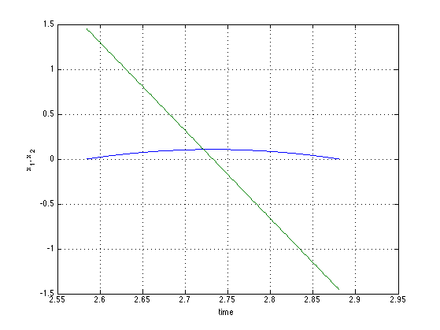
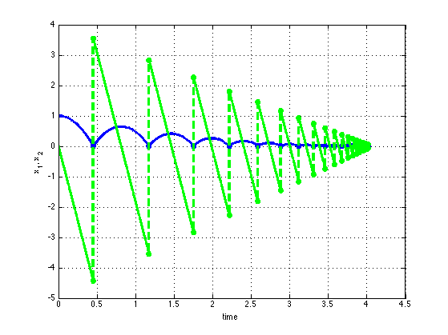
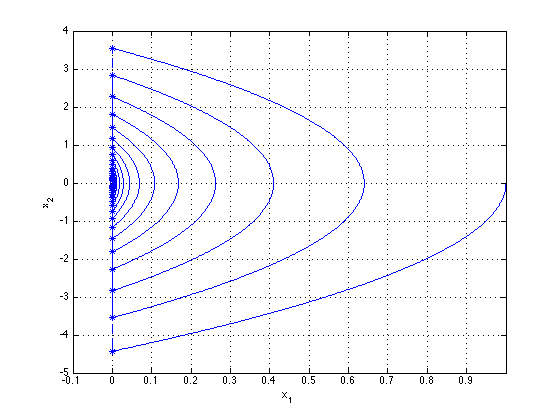

Project: Simulation of a hybrid system
Name: plotHarc.m
Description: plots a hybrid arc in hybrid time domain
Version: 0.01
Contents
Load a hybrid arc
load Data_Example_1_2_BB
Plot the hybrid arc Vs the hybrid time domain (t,j)
figure(1) plotHarc(t,j,x); xlabel('time') ylabel('x_1, x_2') grid on

Plot the hybrid arc Vs the hybrid time domain (t,j) for a specified jump span
figure(2) plotHarc(t,j,x,[3,5]); xlabel('time') ylabel('x_1, x_2') grid on

Plot and get the hybrid arc Vs the hybrid time domain (t,j) for a specified jump
figure(3) [x_sliced,t_sliced] = plotHarc(t,j,x,[5]); xlabel('time') ylabel('x_1, x_2') grid on
Use the modificators
figure(4)
modificator{1} = 'b';
modificator{2} = 'LineWidth';
modificator{3} = 3;
plotHarc(t,j,x(:,1),[],modificator);
xlabel('time')
ylabel('x_1, x_2')
hold on
grid on
modificator{1} = 'g';
modificator{2} = 'LineWidth';
modificator{3} = 3;
plotHarc(t,j,x(:,2),[],modificator);
 Plot a phase plane e.g., Vs 
figure(5) plotHarc(x(:,1),j,x(:,2)); xlabel('x_1') ylabel('x_2') xlim([-0.1, 1]) grid on